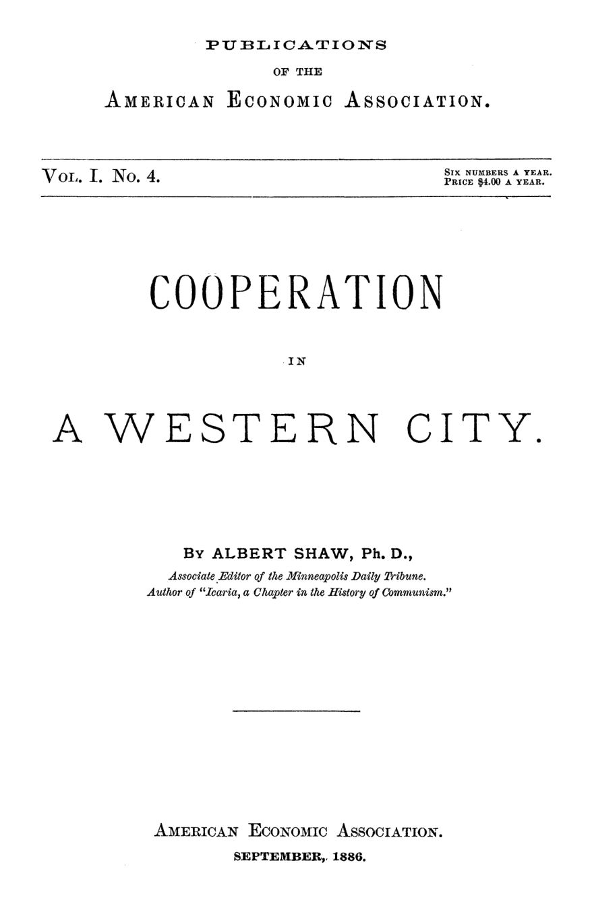

Os tanoeiros que dispensaram o patrão
Leitura: 7 min
Em Minneapolis, a maior praça moageira do mundo, os fabricantes de barris montaram oficinas cooperativas que viraram casa própria e poupança. Albert Shaw conta como funcionavam e onde esbarravam.


Numa sexta-feira da primavera de 1870, os tanoeiros de uma oficina de Minneapolis foram avisados de que, a partir da segunda-feira seguinte, receberiam 12,5 centavos de dólar por barril, e não mais 15. Na segunda, quatro deles já trabalhavam por conta própria: tinham arrendado um terreno, erguido um galpão e fechado contrato para 4.000 barris. O capital somado não chegava a US$ 100.
A experiência durou menos de um ano: o tesoureiro, Lawrence Stoker, tomou para si um contrato grande e virou patrão. A ideia, porém, sobreviveu, e é a história dessas oficinas que Albert Shaw, editor do Minneapolis Daily Tribune, conta nesta edição.
O cenário era a maior praça moageira do mundo. Vinte e seis moinhos junto às Quedas de Santo Antônio tinham capacidade de cerca de 35 mil barris de farinha por dia, e metade da produção ainda seguia em barris de carvalho e olmo. Setecentos a oitocentos tanoeiros atendiam essa demanda; a maioria estava reunida em sete oficinas cooperativas.
Como funcionava uma tanoaria sem patrão?
A forma definitiva nasceu em novembro de 1874, com a Cooperative Barrel Manufacturing Company. O ambiente era hostil: o sindicato dos tanoeiros era filiado à Internacional, que muitos associavam à Comuna de Paris. Quem destravou o negócio foi Charles A. Pillsbury, que prometeu aos cooperados o fornecimento de um de seus moinhos. A oficina começou com dezesseis homens.
Juridicamente, era uma sociedade anônima comum. Todo membro detinha o mesmo número de ações e pagava 15% do valor na entrada. O restante saía de uma contribuição semanal descontada do salário, e o capital integralizado rendia juros fixos semestrais.
O ponto mais fino estava na partilha. Ganhos e perdas ordinários do negócio eram divididos na proporção do salário de cada um, isto é, do trabalho feito. Já a valorização de imóveis, os incêndios e os calotes de clientes eram repartidos igualmente por ação. Shaw viu ali a separação entre o homem como capitalista e o homem como trabalhador.
“Mostra aguda percepção econômica e tem grande valor prático.” (“shows keen economic insight, and has great practical value”)
Quem saía recebia uma nota promissória a seis meses, com juros. Quando as máquinas chegaram, em 1885, o trabalho de 120 tanoeiros passou a caber em 90, e o ajuste foi voluntário.
O que os tanoeiros ganharam com isso?
Casa própria, antes de tudo. Dos 90 sócios da oficina mais antiga, de 60 a 70 eram casados, e nove em cada dez destes eram donos da casa onde moravam, avaliadas em média em US$ 3.500. Shaw admite que a alta dos imóveis ajudou, mas sem a cooperativa aqueles homens não teriam comprado o terreno a tempo.
O mecanismo era a poupança forçada. A contribuição retida do salário, somada aos dividendos até a quitação das ações, fazia do sócio um capitalista quase a contragosto. Quem ficava dois ou três anos saía com algumas centenas de dólares, o bastante para virar agricultor ou abrir um pequeno comércio.
“A companhia lhes serviu como uma caixa econômica compulsória.” (“The company has served them as a compulsory savings bank.”)
Os dividendos também contavam. Um ex-cooperado com dez anos de oficina, depois gerente da loja cooperativa, relatou dividendos anuais que nunca ficaram abaixo de US$ 50, e vendeu suas ações por US$ 750 ao sair. Tesoureiros sem fiança movimentaram milhões; a única mancha foi um que, ao que se acredita, perdeu cerca de US$ 75 no pôquer e sumiu.
Por que a cooperativa não bastava para subir salários?
Porque convivia com oficinas de patrões que fechavam contratos baratos e dispensavam os homens na entressafra. As cooperativas tinham de acompanhar o preço. Resultado: o tanoeiro recebia de 11 a 13 centavos por barril feito à mão, contra 16 a 20 poucos anos antes. E cooperados, sendo também capitalistas, não aderiam facilmente a greves.
Em meados de outubro de 1886, os empregados das oficinas de patrões entraram em greve por 16 centavos, e os cooperados pararam junto. Uma greve de manobristas ferroviários fechou os moinhos e esvaziou o movimento. Propôs-se então um pool de todas as oficinas, com venda centralizada. As duas cooperativas mais antigas recusaram: em 1º de novembro assumiriam o fornecimento de todos os moinhos Pillsbury.
Uma nota de rodapé de última hora registra o desfecho. As cooperativas pagaram salário integral aos grevistas para que seguissem parados, e os patrões acabaram assinando uma tabela de 15 centavos por barril feito à mão. As cooperativas empregavam então cerca de 400 homens; as demais, uns 200.
O que há além dos barris?
O próprio Pillsbury ensaiou outra via. Em setembro de 1882, ofereceu a parte dos empregados uma fatia do lucro líquido, apurada depois dos juros do capital, pedindo sigilo na carta. No primeiro ano, cerca de cem homens dividiram mais de US$ 40 mil, algo como um terço de seus salários. Entravam os cargos de confiança e quem tivesse cinco anos de casa.
Em 1886 veio a carta oposta. A produção fora recorde, mas a safra de 1885 dera prejuízo.
“A razão é simples: não temos lucros para dividir.” (“The simple reason is that we have no profits to divide.”)
Para Shaw, decisivo é que Pillsbury lhe garantiu que o sistema compensava; sem isso, seria só generosidade, não resposta à questão trabalhista.
Houve fracassos. Uma associação de carpinteiros pagou a si mesma salários acima do que o negócio permitia; em outubro, Shaw encontrou trancado o rinque de patinação que servia de oficina. Uma fábrica de camisas de oito costureiras parou em boa parte porque o corte era ruim. Nem os Cavaleiros do Trabalho (Knights of Labor), que a apoiavam, gostavam de camisa que não servia.
O resultado mais amplo vinha de outro ramo da cooperação: as associações de construção e empréstimo. Minneapolis tinha oito, que já haviam ajudado cerca de mil famílias de trabalhadores a obter casa própria; a vizinha St. Paul tinha quarenta.
Na minha leitura
Na minha leitura, o caso de Minneapolis vale justamente por ser prosaico. Os tanoeiros queriam emprego estável e casa, não uma sociedade nova. A regra de dividir o resultado operacional pelo trabalho e o ganho patrimonial pelo capital resolve, numa linha de estatuto, um conflito de incentivos que muitos arranjos de participação dos empregados ainda administram mal.
O limite também está no documento. Uma cooperativa eficiente não impede a corrida salarial para baixo quando divide o mercado com concorrentes que demitem na entressafra, e o sócio que também é dono do capital hesita em fazer greve. A lição permanente é que a forma de propriedade muda os incentivos dentro da empresa, mas não suspende a concorrência fora dela.
Glossário
- Tanoeiro
- artesão que fabrica barris, tonéis e pipas de madeira.
- Oficina de patrão (boss shop)
- tanoaria de dono privado, com jornaleiros pagos por peça e dispensados na entressafra.
- Contribuição semanal (assessment)
- valor retido do salário do sócio para integralizar suas ações na cooperativa.
- Participação nos lucros (profit-sharing)
- parcela do lucro líquido distribuída aos empregados além do salário.
- Associação de construção e empréstimo
- cooperativa de poupança que empresta aos sócios, mediante ágio, para comprar ou construir casa.
Fontes
- Coöperation in a Western City (pp. 7–106). JSTOR · Internet Archive (PDF)
- Sumário da edição no JSTOR: Publications of the American Economic Association, vol. 1, nº 4.
Documento em domínio público (EUA, publicado antes de 1931), via JSTOR Early Journal Content e Internet Archive. Resumo e comentário do autor deste site, sem afiliação com a American Economic Association. Encontrou um erro? Escreva: a correção é publicada no próprio texto, com data.
← Nº 2 · Gás: público ou privado? A pergunta de 1886 Nº 4 · Sabão, chá e governança: por que as cooperativas quebravam →